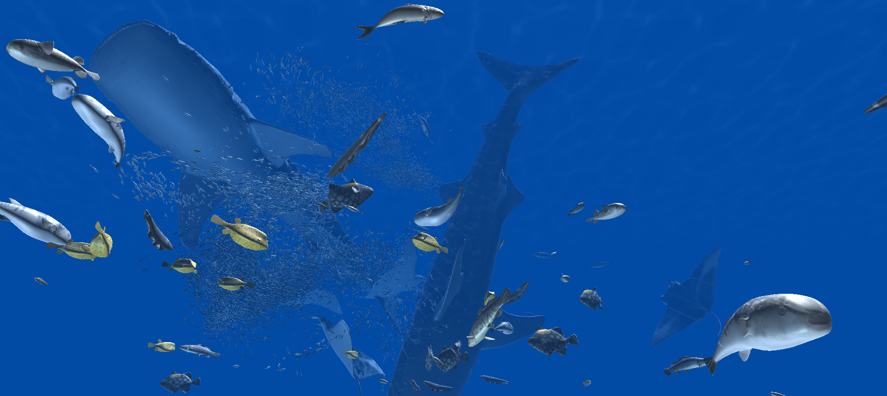

里井 大輝 (Daiki Satoi, Ph.D.)
Contact: dsatoi [at] acm.org
略歴
2017年3月に星野准一准教授の指導の下、筑波大学大学院システム情報工学研究科博士後期課程を修了、博士（工学）の学位を取得。 2017年4月より株式会社スクウェア・エニックス テクノロジー推進部 AIリサーチャー。 エンタテインメントのためのキャラクタ制御技術に興味を持ち、最新の発表論文では生物学・生理学的知見に基づいた多様な魚類のモーション制御を行いました。
お知らせ
- 2017年5月9日: 株式会社スクウェア・エニックスのAIリサーチャーになりました。
- 2017年5月9日: 博士（工学）の学位を取得しました。
- 2016年8月29日: SIGGRAPH 2016での発表スライドを公開しました。
- 2016年5月7日: 主著論文がSIGGRAPH 2016 Technical Papersに採択されました。（プロジェクトページ：Unified Motion Planner for Fishes with Various Swimming Styles）
